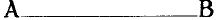
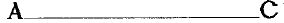
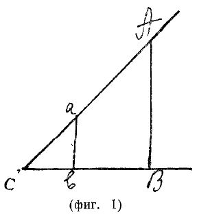

Беседа 3437 от 3877 · Беинса Дуно
Малкият опит / Малък опит
Размишление
Защо ходят децата на училище? – Да се учат. Защо е дошъл човека на земята? – Да се учи. Значи земята е училище, в което човек първо се запознава с учителите и професорите си, а после и със своите съученици. Той може да се запознае с най-добри учители и професори, но това не е достатъчно. Той трябва да научи това, което чуе от учителите си. Знанието, което човек придобива на земята, трябва да мине през трите свята – през физическия, духовния и умствения. С други думи казано: първо човек трябва да възприеме знанието, после да го разбере и след това да го приложи. Само това знание става негова плът и кръв; само това знание може да занесе човек със себе си на онзи свят. Знание, което не е станало плът и кръв на човека, не е истинско. То лесно се изпарява. То е подобно на лед, който се стопява, и на вода, която се изпарява. Като остарее, човек лесно забравя и се оплаква, че паметта му отслабнала. Бащата пушил тютюн, сложил лулата си зад ухото, но забравил къде я е сложил и я търси по цялата къща: тук лула, там лула – няма я. Пита жена си, децата си – никой не я е видял. Най-после малкото дете казва: „Татко, лулата е зад ухото ти“.
Коя е причината за отслабване на паметта? Има много причини за това. Една от причините се дължи на разстройство на нервната система. Когато нервната система на човека е разстроена, явяват се различни болести – във физическия, в духовния и в умствения живот на човека. Ние казваме, че човек е нарушил някои от законите на трите свята. За пример, когато наруши някой закон във физическия свят, човек страда от стомах или коремоболие. Той се оплаква, че стомахът му е разстроен. Причината се крие или в преяяждането, или в недояждането. И едното, и другото са крайности, които влияят върху здравето на човека. Ако не яде, колкото е нужно, човек ще се намери в положението на магарето на Настрадин Ходжа, който постепенно намалявал количеството на храната му. Магарето отвикнало да яде, докато един ден умряло.
Човек трябва да яде толкова, колкото да придобие нещо. Като сее жито, човек очаква някаква придобивка на физическия свят; като прави добро, той очаква някаква придобивка в духовния свят. Да спечелиш един приятел на земята, това е придобивка в духовния свят. Материалните блага са разменна монета на физическия свят, добрите приятели и чувства са разменна монета в духовния свят. Колкото повече приятели имаш в духовния свят, толкова по-добре се нареждат работите ти на физическия свят. Интелигентността и любознателността са разменна монета между същества в умствения свят. Ако влезете в общество между учени хора, вие можете да се свържете с тях само ако имате умствени интереси, т.е. ако се интересувате от това, с което те се занимават. Нямате ли интерес, подобен на техния, те остават чужди за вас.
И тъй, всяко нарушаване на физическите закони произвежда разстройство в стомаха, корема и червата; всяко нарушаване на духовните закони произвежда разстройство в дробовете, т.е. в чувствата на човека; всяко нарушаване законите на умствения свят произвежда разстройство в главата. Обаче физическият, духовният и умственият свят са така тясно свързани, както този и онзи свят. Ето защо, в който свят греши човек, това се отразява върху целия му организъм. Също така казваме: дали греши на този или на онзи свят, човек еднакво носи последствията на своите грешки.
Какво представлява онзи свят? За да познаете онзи свят, вие трябва да познавате трите страни на физическия свят – физическата, духовната и умствената. И онзи свят, наречен духовен и Божествен, също така има по три страни – физическа, духовна и умствена. Ако разглеждате физическата страна на физическия, духовния и умствения свят, ще видите, че те, колкото си приличат, толкова се и различават. Физическата страна на физическия свят е най-неуредена, в духовния свят е по-наредена, а в Божествения е съвършено устроена. Ако пожелаете нещо на физическия свят, много време трябва да мине, докато се реализира. За пример, искате хляб. Първо трябва да имате жито, да го смелите, да омесите брашното, да го опечете и най-после ще видите хляба на трапезата. Материалните работи в Божествения свят стават изведнъж. Достатъчно е да пожелаете да си хапнете хляб и пред вас вече стои един голям хляб. Ако пожелаете да се разходите, пред очите ви се откриват големи градини, обширни полета и високи планини, по които свободно можете да пътувате.
Един млад селянин често пътувал от едно село на друго и за да съкращава пътя си, минавал през една гъста гора. За да го предпази от нещастия, баба му казала: „Синко, ще ти дам няколко заклинания, с които ще си послужиш, когато се натъкнеш на някаква опасност“. Веднъж той минавал през гората и видял, че срещу него идва мечка. Какво да прави? Спомнил си за заклинанията, дадени от баба му, и приложил едното, но мечката продължавала пътя си. Приложил второто – никакъв резултат; приложил третото заклинание – мечката не мислила да се отбие от пътя си. Най-после приложил последното заклинание – качил се на една стара круша. Тук намерил спасението си. Мнозина намират спасението си на някое високо дърво. Те не се нуждаят от заклинания. Много естествено, щом се качиш на крушата, никакво заклинание не ти трябва. Лесно е да отбиеш мечката от пътя ѝ, ако внесеш в ума ѝ една противоположна мисъл. Мечката е страшна, когато си отмъщава, тя е злопаметна. Десетки години минават, но тя помни, както доброто, така и злото. Вие можете да забравите, че сте ѝ направили зло, но тя никога не забравя.
На какво се дължи злото? На неорганизираната материя. Човек се стреми към злото, понеже то представлява организирана материя. Като разменна монета, златото определя отношенията между хората, дава им възможност взаимно да си услужват. Колкото по-културни са хората, толкова по-големи услуги си правят. Във физическия свят разменна монета е работата, която се заплаща с пари; в духовния свят разменна монета са чувствата. Колкото по-добри чувства има човек и колкото е по-разположен, толкова е по-богат. Ако храни лоши чувства в себе си, той няма добро разположение на духа, поради което минава за сиромах. В Божествения свят разменна монета са мислите. Преди да дойде до работата, човек минава през няколко фази: мъчение, труд и работа. Тези фази съществуват в духовния и в Божествения свят. Грамадна е разликата, обаче, между фазите във физическия, духовния и Божествения свят. За пример, на физическия свят едно същество се мъчи по един начин, в Божествения свят – по друг начин. И причините за мъчението са различни.
Някое разумно същество от Божествения свят иска да слезе на земята, да помага на хората, но не му се отваря път. Като не може да постигне желанието си, то се мъчи, но благородно е неговото мъчение. – Къде е Божественият свят? – В организираната човешка мисъл. – Къде е духовният свят? – В сърцето и дробовете. – Физическият свят? – Във физическото тяло. Значи Божественият свят е създал главата, духовният – сърцето и симпатичната нервна система, а физическият – костите, мускулите и лигаментите. Като изучавате световете, ще видите, че процесите, които се извършват в тях, са едни и същи. Разликата се заключава само в материята, която взима участие в процесите. За пример, храненето, като процес, съществува във всички светове, но съществата във физическия свят се хранят повече с твърда материя, в духовния свят – с чувства, а в Божествения – с мисли. Изобщо, каквото става в Божествения свят, отразява се и в низшите светове. И обратно: каквото става във физическия свят, отразява се и във висшите светове.
Сегашните хора се изучават взаимно и виждат каква голяма разлика съществува в отношенията им. Това се дължи на степента на тяхното развитие. Колкото по-висок е светът, в който живее човек, толкова по-добри са отношенията му с хората. Колкото по-надолу слизате, виждате как хората постепенно губят доверието си. За пример, отивате при един банкер да искате пари на заем. Ако се ползвате с голямо доверие, той ще ви даде пари и няма да ви иска поръчители. Ако доверието ви е малко, поръчителите се увеличават. Значи, ако живеете на физическия свят, трима поръчители ще ви искат. – Кои са те? – Първият сте вие, а останалите двама – краката ви. Ако живеете в духовния свят, ще искат двама поръчители – ръцете. И най-после, ако живеете в Божествения свят, ще искат един поръчител – главата. Значи в Божествения свят главата е поръчител, в духовния свят – сърцето, а на физическия – тялото. Следователно вярвайте на главата си в Божествения свят, на сърцето си – в духовния свят и на тялото си – във физическия.
Като ученици, вие трябва да изучавате живата геометрия, да се запознаете с живите линии в природата. За пример, какво ще кажете за правите AB и AC?
 
При това по-дългата линия е по-близо до вас от по-късата. Ако двете линии представляват двама души, правата AC е човек, който е живял повече, обиколил повече свят, следователно е по-учен, разполага с по-големи знания.

И тъй, за да пазите равновесие в живота си, задържайте в ума си само такива мисли, които оставят нещо хубаво във вас. Всяка мисъл, която дава нещо от себе си, е Божествена. Всяка мисъл, която само взима, без да дава нещо, е човешка. Влезе ли една човешка мисъл в ума ви, съзнанието ви се помрачава и вие губите вътрешния си мир. Човек лесно губи мира си. Дошъл някой и му казал, че не е добър или че не е богат. Защо трябва да се обижда и да губи мира си? Влез в скривалището си и виж какво е състоянието на твоята умствена, сърдечна и материална каса. Ако имаш в касата си достатъчно светли и красиви мисли, ти не си глупав човек; ако имаш добри чувства, ти си добър; ако имаш пари в касата си, ти си богат. Щом касите са пълни, каквото и да говорят за тебе, не се смущавай. – „Защо не ме оценяват?“ – Това е друг въпрос. Само ученият човек може да оцени учения; само духовният може да оцени доброто; само богатият може да оцени подобния си. Не е ли учен, духовен и богат, човек прилича на петела, който намерил на бунището един диамант, но го ритнал настрана и си казал: „Защо ми е този камък? Щом не е житно или царевично зрънце, той нищо не струва за мене“. Петелът може да се уподоби на човек, който е намерил скъпоценен камък, но го подхвърля настрана, не го цени. Петелът не знае цената на диаманта. Ако го продаде, ще осигури своята прехрана за цял живот. Скъпоценният камък е отвлечена идея, с която петелът не може да се занимава.
Мнозина се запитват какво представлява Божественият свят? На този въпрос може да се даде следният отговор: Светът, в който се реализират всички мисли, всички чувства и желания, е Божествен. Следователно мислете и пожелавайте само доброто, за да се реализира то. Мислите ли лоши работи, и те ще се реализират, но ще носите отговорност за тях. За пример, някой пожелава да влезе в Божествения свят, там да живее. Не се минава много време, той се намира в този свят. Пожелае ли да излезе от Божествения свят, излиза. Ако добрият човек се усъмни в доброто и помисли, че ще го изгуби, в скоро време доброто го напуска. И обратното е вярно: ако лошият човек пожелае да бъде добър, в скоро време в него става преврат и той дава ход на доброто в себе си. Като знаете това, бъдете внимателни към своите мисли и желания, за да реализирате само добрите, а лошите да възпитавате. Има ли нещо мъчно, да приеме човек една светла мисъл, да пожелае да влезе в Божествения свят? Пожелайте това и забравете желанието си. Няма да се мине много време и вие ще влезете във възвишения свят. – Как? – С мислите, с чувствата и с постъпките си. Ето защо, всяка сутрин, като ставате от сън, отделете по няколко минути да помислите за трите свята – за Божествения, духовния и физическия. Ще кажете, че е забранено човек да мисли за светове, където не е готов да влезе. Забранено е да се вършат само лоши работи, но не и добри.
Разправят за една случка, станала между един руски полковник и един войник. Действителна ли е случката, или анекдот, не е важно. Войникът обичал водка и често се напивал. Един ден полковникът решил да го изпита дали е пиян. За тази цел той поставил на една река две дъски, една до друга и накарал войника да мине реката само по едната дъска. Като видял, че ще падне във водата, войникът приложил хитрост: с единия крак стъпил на едната дъска, а с другия – на втората и извикал: „Ваше, високоблагородие! Да живее отечеството, да живеете и вие! С единия крак вървя за отечеството, с другия – за вас. Ако отечеството не съществуваше, вие нямаше да бъдете полковник“. Така минал той на другия бряг на реката. Полковникът се засмял, потупал го по рамото и му казал: „Лошо правиш, че пиеш, но добре мислиш“. Мисли право и върви напред. Следователно не е забранено да мисли човек за велики и красиви работи. Забранено е да живее зле и да допуска лоши мисли в ума си.
Като знаете силата на добрите мисли и чувства, бъдете внимателни към тях, не отлагайте. Дойде една добра мисъл в ума ви, пристъпете към реализирането ѝ; дойде едно добро чувство в сърцето ви, проявете го; намислите да направите едно добро дело, изявете го. Всяко отлагане носи нещастие; всяко реализиране на доброто води към щастие. Трябвало да станеш рано, да направиш някакво добро – ще станеш, не трябва да се лениш. Леността внася разрушения. Че времето не подхожда, и това не е право. За доброто времето всякога е благоприятно. Каже ли ви се отвътре да направите нещо, не отлагайте. Един офицер, който участвал в миналата война, разправяше следната опитност: „При едно голямо сражение бях на първа линия. Нещо ми нашепваше: „Премести се две крачки назад“. Аз не послушах този глас и след няколко минути ме раниха. Ако бях направил две–три крачки назад, куршумът нямаше да ме засегне“. Друг случай. Пак в миналата война, трябвало един офицер да намери удобно място за взвода си, да се окопае там и да държи отбранителна позиция. Нещо отвътре му нашепвало кое място да избере. Той послушал гласа и се настанил с войниците си на определеното място. След няколко часа неприятелят започнал да ги обстрелва, но куршумите и гранатите падали пред и зад тях така, че нито един войник не пострадал. На другия ден трябвало да преместят позицията си. Войниците настоявали да останат на същото място, но същият глас нашепвал на офицера да изберат друго място. Войниците останали в същите окопи, понеже предишния ден били добре защитени от неприятелските куршуми. Офицерът бил малко настрана от тях. Какво станало? Гранатата паднала в окопа и избила всички войници, само офицерът останал жив, понеже бил настрана от окопите. Ето защо, ако един ден заемете едно място, на другия ден трябва да го смените. Помнете: Еднообразието не допринася нищо за човека. Стремете се към разнообразие в мислите, чувствата и постъпките си. Бъдете разнообразни, да не се отегчавате от живота. Каквото и да стане с вас, благодарете за всичко. От сутрин до вечер благодарете. Ставате сутрин от сън, измивате се – благодарете за чистата вода. След това правите молитвата си – благодарете, че сте станали живи и здрави и можете да работите. Благодарете за чистия и свеж въздух, за храната. Че не сте свършили някоя работа навреме – благодарете и за това. Като свършите работата си, пак благодарете. Че сте счупили една чаша или чиния, благодарете. Можехте да счупите крака или ръката си. Благодарете, че чашата дойде като изкупление. Като ученици, вие трябва да правите малки опити, а не големи. Каквото ви казвам, прилагайте го. Кажа ви да си миете краката с топла вода, мийте ги и благодарете за чистата вода. Казвам ви да правите гимнастика – правете упражненията и благодарете. Казвам ви да дишате дълбоко – дишайте дълбоко и благодарете за чистия въздух. Казвам ви да чистите обувките си – изчистете ги, сложете им нови връзки. От време на време оставяйте краката си свободни, да дишат и те въздух, да ги огрява светлината. Обувките са затвор за тях. Освободете ги от затвора, нека всеки ден и те да приемат въздух, поне по пет–десет минути. От вас се искат малки опити, а не големи. Малкият опит внася голям подтик. Малкото зърно се размножава и дава класове с 30, 60 и 100 зърна. Малката искра произвежда голяма топлина. В мрачната нощ малката светлина оправя пътя на объркалия се пътник.
Правете малки опити в доброто, за да опитате силата и възможностите, които се крият в него.
Т. м.
Беседа от Учителя, държана на 10 септември 1941 г., 5 ч. сутрин, София, Изгрев.